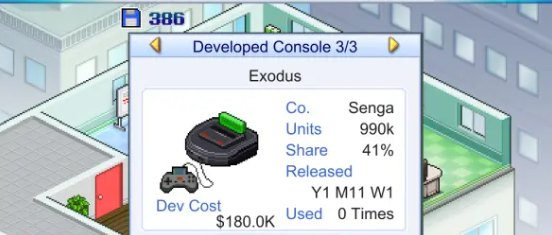
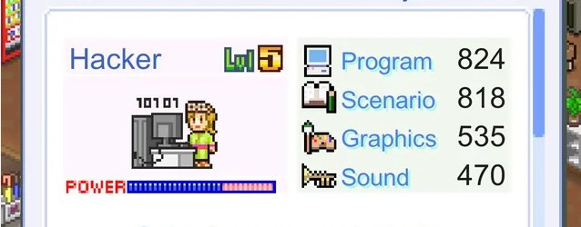
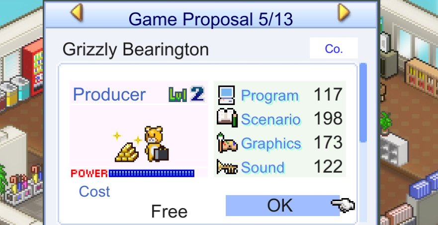
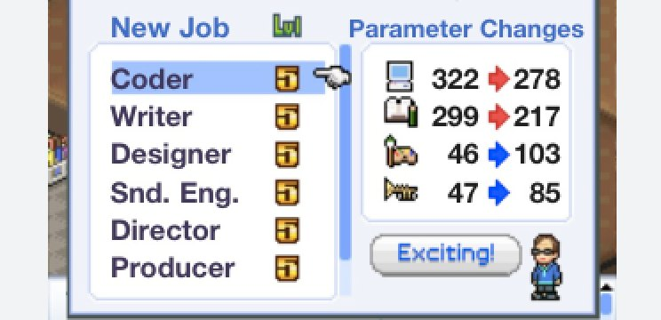

I bravi programmatori raramente sanno anche gestire bene grandi team, le persone che hanno progettato i più grandi mondi online di solito sono sconosciute a chiunque al di fuori delle conferenze di settore, e i più grandi studi di videogiochi sono stati costruiti da persone che ai giochi non giocavano nemmeno. Se questi tre fatti vi sembrano scollegati fra loro, leggete fino in fondo, perché sono collegati, eccome.
Il discorso sulla carriera di un programmatore scivola spesso o nella discussione sui grade — «in cosa L6 differisce da L7» — o nella disputa «gestione del team contro percorso da esperto», come se i percorsi fossero solo due. Vi racconterò dello sviluppo di giochi e di esempi di miei conoscenti, perché in questo momento li ho proprio davanti agli occhi.
Un senior nel gamedev ha come minimo tre direzioni di crescita fondamentalmente diverse, e ciascuna differisce non solo per la riga nel titolo della posizione, ma per l'intera comprensione del mondo e del progetto in quel mondo. Uno vede il sistema di sistemi, il secondo lavora con i sottosistemi, e al terzo è destinato l'incontro con il prodotto, il mercato e le persone per le quali tutto questo è stato messo in piedi.
Nei primi cinque-sette anni un programmatore accumula massa, cioè impara il linguaggio, il motore, il debugger, l'hardware, e questo tratto di strada di solito è ben segnalato dai predecessori sotto forma di tutorial, corsi, mentori, code review e grade. Poi la segnaletica finisce, la persona diventa senior, e si scopre che più avanti non ci sono indicazioni, e la maggior parte viene a sapere dell'esistenza del bivio solo dopo aver già svoltato per caso su uno dei sentieri. Il problema è che i percorsi spesso richiedono competenze opposte, e potenziarne uno andrà a scapito degli altri.
L'architetto impara a non scrivere codice lui stesso, e nemmeno a fare review delle soluzioni del team, ma a prendere decisioni su dove questo team debba andare in generale. Il tech lead impara a non farsi distrarre dalle persone, sia sul piano dei task sia sul piano delle decisioni da prendere, perché qualunque decisione può essere implementata in dieci modi diversi e quale sia quella giusta può dirlo forse solo l'architetto, al quale però non dovrebbe importare.
Il producer impara a non pensare al codice del tutto, e può essere dura, perché in dieci-quindici anni il codice si incide così a fondo nel modo di pensare che non ragionare in categorie di progetto e task diventa difficile, se non doloroso. L'albero delle carriere dopo la posizione senior non conosce il «qualche volta», e il tentativo di percorrere tutti e tre i rami, o anche solo due contemporaneamente, di solito produce una persona che fa tre lavori in modo mediocre. Come in quella barzelletta sul baciare una ragazza e guidare l'auto: se provi a farle insieme, vengono male entrambe.
Junior ──► Middle ──► Senior ──► ???
│
┌──────────────┼──────────────┐
▼ ▼ ▼
Architetto Tech lead Producer
(sistema di (tecnologia (prodotto
sistemi) e profondità) e mercato)Ma tutte e tre le strade sono solo risposte diverse alla stessa domanda: dove mettere la massa ingegneristica accumulata quando scrivere codice più velocemente non funziona più, perché di conoscenza ne hai accumulata per due-tre persone, a volte di più, ma scrivere due-tre-dieci volte più codice fisicamente non si può.
Architetto

Si può passare agli architetti e cominciare a progettare sistemi su larga scala — su larga scala nel senso che una, due o anche tre persone non li scriveranno in un tempo prevedibile. Qui il rapporto fra programmazione e gestione oscilla intorno al cinquanta e cinquanta, ma per la maggior parte l'architetto non scrive codice affatto. Oppure costruisce da solo i template e gli scheletri dei sistemi, mentre tutto il volume di lavoro, che in ogni caso supera le possibilità di poche persone, va consegnato a risorse umane reclutate... con tutto ciò che ne consegue.
L'area di interesse dell'architetto non è sempre un singolo sistema, ma spesso le interconnessioni fra i sistemi: cosa comunica con cosa, dove sono i confini, chi può far cadere chi e quanto costa accordarsi su un'interfaccia. La differenza chiave rispetto al tech lead è che l'architetto opera con orizzonti, piani e domande del tipo «come si romperà questo quando diventerà dieci volte più grande».
Questo non lo rende più intelligente, serve semplicemente un'altra forma mentis, e un buon architetto può francamente annaspare nei dettagli di un specifico container lock-free, ma «sente ingegneristicamente» che quel sottosistema fra un anno andrà riscritto, perché è legato a un'assunzione e non sopravviverà alla crescita dell'utenza online.
Esempi dal mondo dei giochi: Maxim Baryshnikov, che per sei anni ha fatto evolvere architettonicamente il motore BigWorld per World of Tanks e con il team ha trascinato il progetto fino allo stato in cui l'infrastruttura regge un milione, se la memoria non mi inganna, di utenti online. È il caso in cui l'architettura si regge su una sola persona.
Il prezzo del percorso è che l'architetto perde gradualmente la sensibilità per il codice. Non perché diventi più stupido: semplicemente un'ora spesa sul codice è un'ora dell'architetto sprecata sul codice, e quelle poche righe di codice scritte lasceranno il team senza interfacce decenti fra tre sistemi.
Tech lead / Direttore tecnico

Questa persona conosce molto bene le tecnologie e probabilmente programma più di chiunque altro nel team, fa più ricerca di tutti, e la sua area di interesse sono i sottosistemi, o il sottosistema di cui si sta occupando in questo momento, più le sue connessioni con i vicini. Non il «sistema di sistemi» dell'architetto, ma un pezzo concreto di codice reale: magari il renderer, magari la rete, o la fisica, o l'interprete degli script. Non importa cosa, importa scavare fino al fondo, e se il fondo si rivela falso, allora fino al successivo.
Qui non serve nemmeno cercare esempi: John Carmack, un uomo che da decenni fa la stessa cosa — prende un'area (rendering software, OpenGL, VR, rete, fisica) e la addenta fino al livello in cui con lui non resta più niente su cui discutere.
È caratteristico che Carmack, con tutta la sua fama, non abbia quasi mai gestito grandi team né costruito processi: in compenso costruiva tecnologie, e i processi intorno a lui li costruivano altri.
O Robert Nystrom, un altro tipo di tech lead, con i suoi «Game Programming Patterns» e «Crafting Interpreters». Sono libri di una persona a cui interessa non solo fare, ma capire fino in fondo e spiegare in modo che capiscano anche gli altri nel team. Il tech lead sta bene, perché è l'unico di tutti che continua a percorrere la strada delle avventure dello sviluppo con le proprie mani, ciò per cui un tempo si è innamorato della professione.
Tutto si paga... Ehm... questo l'ho già scritto da qualche parte. Il prezzo del percorso sta nell'altezza del soffitto d'influenza, perché una persona tecnica, per quanto geniale e con una montagna di amici e colleghi influenti, si scontra con il limite di ciò che si può tenere in una sola testa.
L'industria è piena di esempi in cui una tecnologia brillante è morta perché il suo autore non ha potuto o voluto spiegarne il valore a chi distribuisce i budget. Sì, di solito è la posizione meno pagata di tutte, perché i soldi di solito vanno al producer e la gloria all'architetto. Un direttore tecnico senza un producer influente e un architetto in gamba rischia di passare tutta la vita a limare il sottosistema perfetto per un prodotto che nessuno vedrà né apprezzerà. Carmack e Nystrom sono molto probabilmente eccezioni.
Producer

O Founder, se ha capitale proprio: è il più lontano di tutti dai programmatori e dallo sviluppo, perché da tempo non fa più giochi, fa soldi. Per lui è più importante sapere di prodotto, mercato, lavoro con le persone e pipeline di produzione che del nuovo standard C++.
E quasi sempre non programma più, perché la sua area di interesse è ormai il gioco finito nella sua interezza, e i pensieri su cosa vedrà il giocatore e se la unit economics tornerà. Il producer non è più un «ex programmatore che si è arreso», ma una persona che un giorno ha notato che i bug del progetto non vivono nel codice, e un gioco con un motore perfetto e un pubblico di riferimento poco chiaro muore con la stessa affidabilità di un gioco con bug e codice storto. In fin dei conti, la strumentazione di più alta qualità è inutile se non serve allo scopo di creare un gioco finito, che non solo funziona, ma si vende pure e trova riscontro nelle mani del giocatore. Non aspettatevi dal producer la comprensione dei problemi dei programmatori: lui non è più dei nostri, anche se capita diversamente.
Jonathan Blow è uno degli esempi di vero producer indie, che però periodicamente indossa ora il cappello dell'architetto (il suo linguaggio Jai riguarda più il livello architetturale), ora quello del tech lead, con interventi alla GDC. O Nick Atamas, che di mestiere è più un tech lead, perché ha costruito praticamente da solo Slate per Unreal, ma per il modo di comunicare e la gamma di problemi che considerava era più un producer, e il suo passaggio a una startup era solo questione di tempo.
Il prezzo del percorso è ovvio ed è il più alto delle tre strade: non scriverete più codice. Il codice se ne va per sempre; al posto del codice ci saranno questioni organizzative, soldi, ricerca di investitori e rendiconti agli azionisti. Cinque anni dopo il producer apre il suo vecchio repository con la sensazione delle foto dell'album di scuola: riconoscimento senza il minimo desiderio di tornare. I soldi? I soldi ci sono... la felicità invece.
Ibridi
In realtà tutti i tipi elencati sopra non sono celle ma attrattori, punti di attrazione. Una persona è attirata verso uno di essi, ma nel corso della carriera può andare alla deriva, e nei piccoli studi è costretta a tendersi in direzioni diverse a turno, a volte nell'arco di una sola giornata lavorativa. Lo stesso Blow (Braid e The Witness) è un producer fatto e finito che la sera scrive un compilatore, mentre Carmack è un tech lead evidente, le cui decisioni tecnologiche hanno definito l'architettura di intere generazioni di motori, ma costretto a decidere con il team quale gioco costruire attorno alla nuova tecnologia. Ma queste persone sono più eccezioni che regola.
Qualunque architetto di una MMO di successo comincia inevitabilmente a ragionare sul ritorno dei giocatori, perché l'architettura dello sharding e la monetizzazione sono legate molto strettamente, e volente o nolente tocca andare dal marketing a risolvere questioni comuni, o dai pubblicitari a concordare tempi e budget. E uscendo dai confini del proprio accogliente studio si comincia a vedere come questa gradazione trapela nei titoli delle posizioni aperte.
Il sospetto è che questo bivio non sia una malattia del solo gamedev. Nell'azienda libro-faccia, quando gli ingegneri sono diventati non centinaia ma migliaia, si è scoperto che misurare tutti in base alla velocità di battitura delle letterine non funzionava più: c'è chi risolve le cose difficili lentamente, scrive poco, ma moltiplica la resa di interi team. Hanno dovuto formalizzare gli archetipi dei senior, che all'improvviso si sono rivelati ben sei: Generalist, Specialist, Coding Machine, Tech Lead, Fixer e Product Hybrid (quel «Coding Machine», per inciso, l'hanno descritto su misura di una persona concreta, per anni top committer dell'intera azienda). Non si sovrappone uno a uno alla mia terna, e da loro il Tech Lead si chiama proprio Tech Lead, senza alcun dialetto aziendale, ma i rastrelli sono gli stessi, lo stesso insieme di «forme mentis» e la stessa avvertenza che l'archetipo non è una cella e si può «multiclassare», passando da un ruolo all'altro. Quindi ci sono ragioni per credere che questa gradazione sia propria non solo delle aziende di videogiochi: semplicemente nel gamedev si vede meglio, perché gli studi sono più piccoli e i cappelli bisogna cambiarli più spesso.
Le transizioni fra archetipi sono possibili, ma molto asimmetriche. Un tech lead può tranquillamente crescere fino ad architetto, ed è piuttosto una crescita naturale, quando la profondità di conoscenza accumulata si converte in ampiezza. Oppure un architetto può passare ai producer: anche qui il percorso è comprensibile, perché dal sistema di sistemi al sistema «prodotto-mercato» ci sono solo pochi passi e altri pattern di applicazione. Il percorso inverso invece non si incontra quasi mai, e un producer che torna tech lead o architetto è un personaggio più o meno della stessa storiella del generale che torna a fare il cecchino. In teoria le mani ricordano, in pratica durante l'assenza sono cambiati sia i fucili sia la guerra.
Qui però vale la pena raccontare dei super-producer e dei fatti che ho promesso all'inizio dell'articolo, sugli studi costruiti da persone che ai giochi non avevano davvero mai giocato. Bobby Kotick rilevò la Activision quasi fallita all'inizio degli anni novanta, e non era un fan; per sua stessa ammissione non era un giocatore accanito né un buon programmatore. A dirla tutta, non era proprio un programmatore. Da studente ebbe fra le mani Arktronics e vendeva giochi per Apple II, ma a scriverli era il suo amico Howard Marks, non lui, quindi per lui il codice fu davvero solo «capitale di partenza».
In compenso vide il «nuovo petrolio» dove gli altri vedevano campi bruciati, e portò nello sviluppo manager dal mondo del detersivo e delle conserve. Tolse dal processo di sviluppo tutta la romantica, trasformando l'uscita dei giochi in una catena di montaggio prevedibile, e trent'anni dopo Microsoft ha comprato quella catena di montaggio per 69 miliardi di dollari. È il tipo di super-producer per cui il codice non è mai stato né un amore né un mezzo di guadagno, al massimo capitale di partenza, ma più spesso nemmeno quello. L'architetto e il tech lead costruiscono sistemi, piccoli o grandi, propri o migliorando quelli altrui, perché a loro interessa come è fatto e come funziona il codice.
Il producer e il super-producer costruiscono un'azienda, perché a loro interessa come funzionano i soldi — e arriviamo così a capire perché un bravo programmatore raramente gestisce bene un grande team. Non perché sia stupido o privo di competenze, ma perché la gestione di un team si regge su domande che riguardano soldi, persone e mercato, dalle quali il bravo programmatore scappa nel codice e nello sviluppo. È ingenuo aspettarsi che all'improvviso si innamori di quelle domande quando il team cresce.
Mister brindisi
C'è, tuttavia, ancora un tipo che nessuno schema di carriera disegnerà mai, perché disegnarlo è imbarazzante. Non è il miglior architetto, non è il tech lead più profondo e non è il producer più figo, ma si ritrova sempre al tavolo dove, dopo il terzo brindisi, si decide a quale progetto tagliare i fondi e a chi passarli. Sa scrivere codice, o tracciare schemi, o calcolare la unit economics, ma quello che sa fare meglio è trovarsi accanto al momento giusto, piazzare la battuta a proposito e ingraziarsi chi tiene il banco. Tecnicamente può non saper fare nulla, ma possiede la competenza più rara nell'ambiente ingegneristico: «farsi ricordare». E le persone che prendono le decisioni lo ricordano e gli vogliono bene.
E sulla lunga distanza della carriera questo batte non di rado sia l'architettura, sia la profondità, sia il fiuto per il prodotto, perché un sottosistema brillante di cui nessuno ai piani alti sa nulla perde contro uno mediocre che si è trovato un difensore allegro e rumoroso al tavolo giusto. Il prezzo del percorso? Lo pagano gli altri... Chiamerò questo archetipo, evasivamente, «uomo-connettore» o «uomo-brindisi», e farò finta che si parli di networking.
Punti di riferimento

Se si prova a mettere insieme una visione unica, si può capire all'incirca da che parte vi tira con la domanda «qual è la prima cosa che fate su un progetto?». L'architetto disegnerà schemi di connessioni e cercherà problemi sotto carico. Il tech lead andrà a frugare nel sottosistema più interessante e a leggere codice finché non capisce come funziona. Il producer andrà a tormentare le persone con le domande, o a far baldoria con i capi, il che pure risolve molte questioni, solo su un altro piano.
Se questa variante non ha funzionato, allora bisogna guardare cosa vi stanca di meno. L'architetto non si stanca dei post-mortem e delle review, al tech lead non viene la nausea dalla documentazione, e il producer può restare per ore in meeting con ordini del giorno indefiniti. Ciò che vi stanca meno di tutto, quella è la vostra strada, perché sulla distanza di dieci anni a vincere non sono più il talento e le conoscenze, ma il basso costo dell'esistenza quotidiana nel ruolo.
Oppure si può non scegliere... Si può anche questo, ma allora la scelta la faranno per voi, perché il senior che non ha scelto una direzione non resta un generalista: diventa quello che si può assegnare secondo le circostanze, di solito al momento dell'ennesima riorganizzazione. Tutta la questione è se quel posto l'avete scelto voi, o se si è scelto da solo mentre chiudevate lo sprint.
← Tutti gli articoli